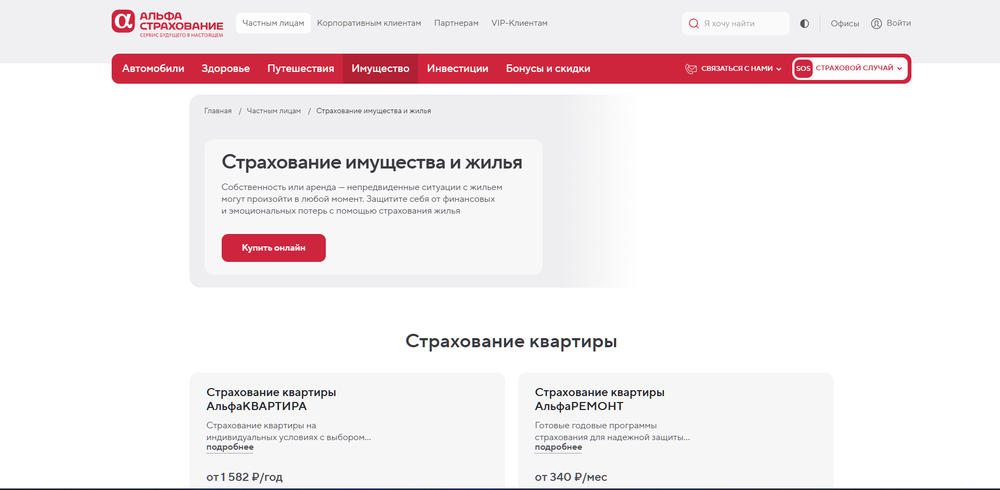

Распознавание описи имущества для страховых агентов
НейроМаша — встроенная в АльфаПолис функция распознавания описи имущества с помощью нейросети. Я спроектировала сценарий от загрузки файлов и обработки ошибок до проверки результата, ручного дополнения списка и перехода к расчёту полиса.
- Снизила фокус сценария с ручного ввода на верификацию результата
- Учла ограничения MVP и качество неидеальных входных данных
- Собрала гипотезы и валидировала их через UX Feedback